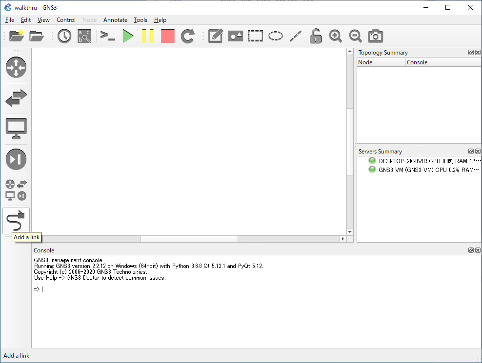
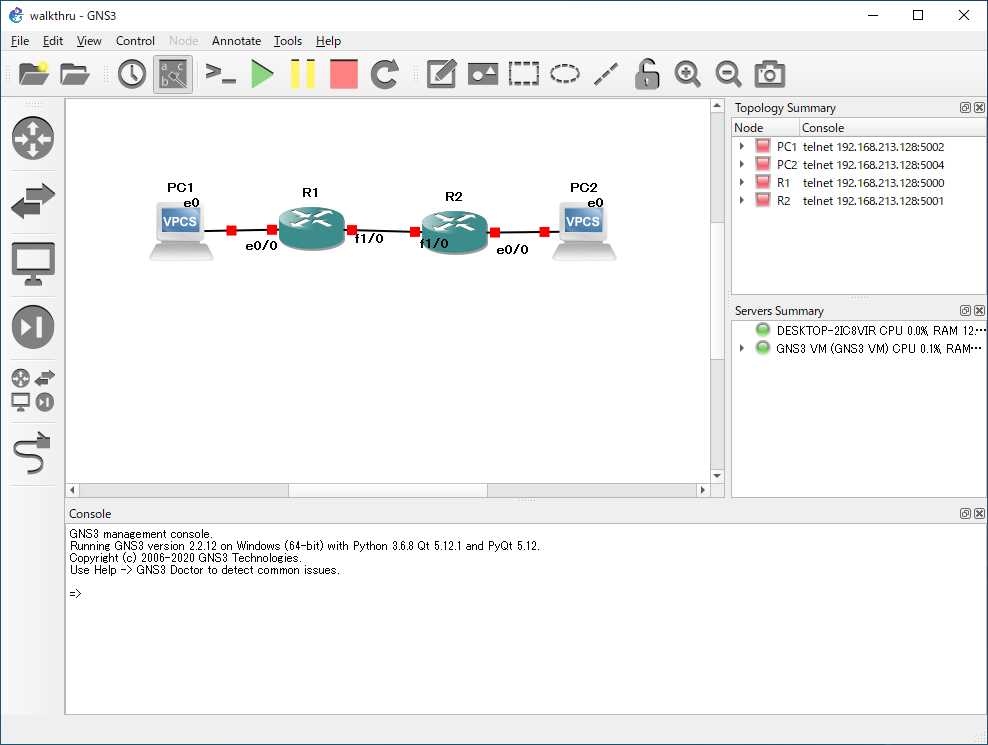

ウォークスルー¶
新規プロジェクトの作成 ～ オブジェクトの配置／設定 ～ 動作確認までを通しで行います。
新規プロジェクトの作成
オブジェクトの配置
インターフェース名を表示
全オブジェクトの電源 ON

Note
以下は コンソールを起動 して実行します。
R1 の設定
■ 実行するコマンド
show interfaces configure terminal interface ethernet0/0 ip address 192.168.11.254 255.255.255.0 no shutdown exit interface fastethernet1/0 ip address 192.168.21.1 255.255.255.0 no shutdown exit router rip network 192.168.11.0 network 192.168.21.0 end show interfaces show ip route copy running-config startup-config
■ 実行ログ
R1#show interfaces Ethernet0/0 is administratively down, line protocol is down Hardware is AmdP2, address is cc01.0545.0000 (bia cc01.0545.0000) MTU 1500 bytes, BW 10000 Kbit, DLY 1000 usec, reliability 255/255, txload 1/255, rxload 1/255 Encapsulation ARPA, loopback not set Keepalive set (10 sec) ARP type: ARPA, ARP Timeout 04:00:00 Last input never, output never, output hang never Last clearing of "show interface" counters never Input queue: 0/75/0/0 (size/max/drops/flushes); Total output drops: 0 Queueing strategy: fifo Output queue: 0/40 (size/max) 5 minute input rate 0 bits/sec, 0 packets/sec 5 minute output rate 0 bits/sec, 0 packets/sec 0 packets input, 0 bytes, 0 no buffer Received 0 broadcasts, 0 runts, 0 giants, 0 throttles 0 input errors, 0 CRC, 0 frame, 0 overrun, 0 ignored 0 input packets with dribble condition detected 0 packets output, 0 bytes, 0 underruns 0 output errors, 0 collisions, 0 interface resets 0 babbles, 0 late collision, 0 deferred 0 lost carrier, 0 no carrier 0 output buffer failures, 0 output buffers swapped out --More-- FastEthernet1/0 is administratively down, line protocol is down Hardware is AmdFE, address is cc01.0545.0010 (bia cc01.0545.0010) MTU 1500 bytes, BW 100000 Kbit, DLY 100 usec, reliability 255/255, txload 1/255, rxload 1/255 Encapsulation ARPA, loopback not set Keepalive set (10 sec) Full-duplex, 100Mb/s, 100BaseTX/FX ARP type: ARPA, ARP Timeout 04:00:00 Last input never, output never, output hang never Last clearing of "show interface" counters never Input queue: 0/75/0/0 (size/max/drops/flushes); Total output drops: 0 Queueing strategy: fifo Output queue: 0/40 (size/max) 5 minute input rate 0 bits/sec, 0 packets/sec 5 minute output rate 0 bits/sec, 0 packets/sec 0 packets input, 0 bytes Received 0 broadcasts, 0 runts, 0 giants, 0 throttles 0 input errors, 0 CRC, 0 frame, 0 overrun, 0 ignored 0 watchdog 0 input packets with dribble condition detected 0 packets output, 0 bytes, 0 underruns 0 output errors, 0 collisions, 0 interface resets 0 babbles, 0 late collision, 0 deferred --More-- 0 lost carrier, 0 no carrier 0 output buffer failures, 0 output buffers swapped out R1# R1#configure terminal Enter configuration commands, one per line. End with CNTL/Z. R1(config)# R1(config)#interface ethernet0/0 R1(config-if)# R1(config-if)#ip address 192.168.11.254 255.255.255.0 R1(config-if)# R1(config-if)#no shutdown R1(config-if)# R1(config-if)# *Mar 1 00:05:14.699: %LINK-3-UPDOWN: Interface Ethernet0/0, changed state to up *Mar 1 00:05:15.699: %LINEPROTO-5-UPDOWN: Line protocol on Interface Ethernet0/0, changed state to up R1(config-if)#exit R1(config)# R1(config)#interface fastethernet1/0 R1(config-if)# R1(config-if)#ip address 192.168.21.1 255.255.255.0 R1(config-if)# R1(config-if)#no shutdown R1(config-if)# R1(config-if)# *Mar 1 00:05:52.119: %LINK-3-UPDOWN: Interface FastEthernet1/0, changed state to up *Mar 1 00:05:53.119: %LINEPROTO-5-UPDOWN: Line protocol on Interface FastEthernet1/0, changed state to up R1(config-if)#exit R1(config)# R1(config)#router rip R1(config-router)# R1(config-router)#network 192.168.11.0 R1(config-router)# R1(config-router)#network 192.168.21.0 R1(config-router)# R1(config-router)#end R1# *Mar 1 00:06:29.595: %SYS-5-CONFIG_I: Configured from console by console R1#show interfaces Ethernet0/0 is up, line protocol is up Hardware is AmdP2, address is cc01.0545.0000 (bia cc01.0545.0000) Internet address is 192.168.11.254/24 MTU 1500 bytes, BW 10000 Kbit, DLY 1000 usec, reliability 255/255, txload 1/255, rxload 1/255 Encapsulation ARPA, loopback not set Keepalive set (10 sec) ARP type: ARPA, ARP Timeout 04:00:00 Last input never, output 00:00:05, output hang never Last clearing of "show interface" counters never Input queue: 0/75/0/0 (size/max/drops/flushes); Total output drops: 0 Queueing strategy: fifo Output queue: 0/40 (size/max) 5 minute input rate 0 bits/sec, 0 packets/sec 5 minute output rate 0 bits/sec, 0 packets/sec 0 packets input, 0 bytes, 0 no buffer Received 0 broadcasts, 0 runts, 0 giants, 0 throttles 0 input errors, 0 CRC, 0 frame, 0 overrun, 0 ignored 0 input packets with dribble condition detected 67 packets output, 6714 bytes, 0 underruns 0 output errors, 0 collisions, 1 interface resets 0 babbles, 0 late collision, 0 deferred 0 lost carrier, 0 no carrier --More-- 0 output buffer failures, 0 output buffers swapped out FastEthernet1/0 is up, line protocol is up Hardware is AmdFE, address is cc01.0545.0010 (bia cc01.0545.0010) Internet address is 192.168.21.1/24 MTU 1500 bytes, BW 100000 Kbit, DLY 100 usec, reliability 255/255, txload 1/255, rxload 1/255 Encapsulation ARPA, loopback not set Keepalive set (10 sec) Full-duplex, 100Mb/s, 100BaseTX/FX ARP type: ARPA, ARP Timeout 04:00:00 Last input 00:00:01, output 00:00:08, output hang never Last clearing of "show interface" counters never Input queue: 0/75/0/0 (size/max/drops/flushes); Total output drops: 0 Queueing strategy: fifo Output queue: 0/40 (size/max) 5 minute input rate 0 bits/sec, 0 packets/sec 5 minute output rate 0 bits/sec, 0 packets/sec 17 packets input, 2775 bytes Received 16 broadcasts, 0 runts, 0 giants, 0 throttles 0 input errors, 0 CRC, 0 frame, 0 overrun, 0 ignored 0 watchdog 0 input packets with dribble condition detected 64 packets output, 6465 bytes, 0 underruns --More-- 0 output errors, 0 collisions, 1 interface resets 0 babbles, 0 late collision, 0 deferred 0 lost carrier, 0 no carrier 0 output buffer failures, 0 output buffers swapped out R1#show ip route Codes: C - connected, S - static, R - RIP, M - mobile, B - BGP D - EIGRP, EX - EIGRP external, O - OSPF, IA - OSPF inter area N1 - OSPF NSSA external type 1, N2 - OSPF NSSA external type 2 E1 - OSPF external type 1, E2 - OSPF external type 2 i - IS-IS, su - IS-IS summary, L1 - IS-IS level-1, L2 - IS-IS level-2 ia - IS-IS inter area, * - candidate default, U - per-user static route o - ODR, P - periodic downloaded static route Gateway of last resort is not set R 192.168.31.0/24 [120/1] via 192.168.21.2, 00:00:13, FastEthernet1/0 C 192.168.11.0/24 is directly connected, Ethernet0/0 C 192.168.21.0/24 is directly connected, FastEthernet1/0 R1#copy running-config startup-config Destination filename [startup-config]? Building configuration... [OK] R1#R2 の設定
■ 実行するコマンド
show interfaces configure terminal interface ethernet0/0 ip address 192.168.31.254 255.255.255.0 no shutdown exit interface fastethernet1/0 ip address 192.168.21.2 255.255.255.0 no shutdown exit router rip network 192.168.31.0 network 192.168.21.0 end show interfaces show ip route copy running-config startup-config
■ 実行ログ
R2#show interfaces Ethernet0/0 is administratively down, line protocol is down Hardware is AmdP2, address is cc02.0555.0000 (bia cc02.0555.0000) MTU 1500 bytes, BW 10000 Kbit, DLY 1000 usec, reliability 255/255, txload 1/255, rxload 1/255 Encapsulation ARPA, loopback not set Keepalive set (10 sec) ARP type: ARPA, ARP Timeout 04:00:00 Last input never, output never, output hang never Last clearing of "show interface" counters never Input queue: 0/75/0/0 (size/max/drops/flushes); Total output drops: 0 Queueing strategy: fifo Output queue: 0/40 (size/max) 5 minute input rate 0 bits/sec, 0 packets/sec 5 minute output rate 0 bits/sec, 0 packets/sec 0 packets input, 0 bytes, 0 no buffer Received 0 broadcasts, 0 runts, 0 giants, 0 throttles 0 input errors, 0 CRC, 0 frame, 0 overrun, 0 ignored 0 input packets with dribble condition detected 0 packets output, 0 bytes, 0 underruns 0 output errors, 0 collisions, 0 interface resets 0 babbles, 0 late collision, 0 deferred 0 lost carrier, 0 no carrier 0 output buffer failures, 0 output buffers swapped out --More-- FastEthernet1/0 is administratively down, line protocol is down Hardware is AmdFE, address is cc02.0555.0010 (bia cc02.0555.0010) MTU 1500 bytes, BW 100000 Kbit, DLY 100 usec, reliability 255/255, txload 1/255, rxload 1/255 Encapsulation ARPA, loopback not set Keepalive set (10 sec) Full-duplex, 100Mb/s, 100BaseTX/FX ARP type: ARPA, ARP Timeout 04:00:00 Last input never, output never, output hang never Last clearing of "show interface" counters never Input queue: 0/75/0/0 (size/max/drops/flushes); Total output drops: 0 Queueing strategy: fifo Output queue: 0/40 (size/max) 5 minute input rate 0 bits/sec, 0 packets/sec 5 minute output rate 0 bits/sec, 0 packets/sec 0 packets input, 0 bytes Received 0 broadcasts, 0 runts, 0 giants, 0 throttles 0 input errors, 0 CRC, 0 frame, 0 overrun, 0 ignored 0 watchdog 0 input packets with dribble condition detected 0 packets output, 0 bytes, 0 underruns 0 output errors, 0 collisions, 0 interface resets 0 babbles, 0 late collision, 0 deferred --More-- 0 lost carrier, 0 no carrier 0 output buffer failures, 0 output buffers swapped out R2# R2#configure terminal Enter configuration commands, one per line. End with CNTL/Z. R2(config)# R2(config)#interface ethernet0/0 R2(config-if)# R2(config-if)#ip address 192.168.31.254 255.255.255.0 R2(config-if)# R2(config-if)#no shutdown R2(config-if)# R2(config-if)# *Mar 1 00:04:25.615: %LINK-3-UPDOWN: Interface Ethernet0/0, changed state to up *Mar 1 00:04:26.615: %LINEPROTO-5-UPDOWN: Line protocol on Interface Ethernet0/0, changed state to up R2(config-if)#exit R2(config)# R2(config)#interface fastethernet1/0 R2(config-if)# R2(config-if)#ip address 192.168.21.2 255.255.255.0 R2(config-if)# R2(config-if)#no shutdown R2(config-if)# R2(config-if)# *Mar 1 00:04:55.051: %LINK-3-UPDOWN: Interface FastEthernet1/0, changed state to up *Mar 1 00:04:56.051: %LINEPROTO-5-UPDOWN: Line protocol on Interface FastEthernet1/0, changed state to up R2(config-if)#exit R2(config)# R2(config)#router rip R2(config-router)# R2(config-router)#network 192.168.31.0 R2(config-router)# R2(config-router)#network 192.168.21.0 R2(config-router)# R2(config-router)#end R2# *Mar 1 00:05:32.195: %SYS-5-CONFIG_I: Configured from console by console R2# R2#show interfaces Ethernet0/0 is up, line protocol is up Hardware is AmdP2, address is cc02.0555.0000 (bia cc02.0555.0000) Internet address is 192.168.31.254/24 MTU 1500 bytes, BW 10000 Kbit, DLY 1000 usec, reliability 255/255, txload 1/255, rxload 1/255 Encapsulation ARPA, loopback not set Keepalive set (10 sec) ARP type: ARPA, ARP Timeout 04:00:00 Last input never, output 00:00:09, output hang never Last clearing of "show interface" counters never Input queue: 0/75/0/0 (size/max/drops/flushes); Total output drops: 0 Queueing strategy: fifo Output queue: 0/40 (size/max) 5 minute input rate 0 bits/sec, 0 packets/sec 5 minute output rate 0 bits/sec, 0 packets/sec 0 packets input, 0 bytes, 0 no buffer Received 0 broadcasts, 0 runts, 0 giants, 0 throttles 0 input errors, 0 CRC, 0 frame, 0 overrun, 0 ignored 0 input packets with dribble condition detected 48 packets output, 5038 bytes, 0 underruns 0 output errors, 0 collisions, 1 interface resets 0 babbles, 0 late collision, 0 deferred 0 lost carrier, 0 no carrier --More-- 0 output buffer failures, 0 output buffers swapped out FastEthernet1/0 is up, line protocol is up Hardware is AmdFE, address is cc02.0555.0010 (bia cc02.0555.0010) Internet address is 192.168.21.2/24 MTU 1500 bytes, BW 100000 Kbit, DLY 100 usec, reliability 255/255, txload 1/255, rxload 1/255 Encapsulation ARPA, loopback not set Keepalive set (10 sec) Full-duplex, 100Mb/s, 100BaseTX/FX ARP type: ARPA, ARP Timeout 04:00:00 Last input 00:00:23, output 00:00:04, output hang never Last clearing of "show interface" counters never Input queue: 0/75/0/0 (size/max/drops/flushes); Total output drops: 0 Queueing strategy: fifo Output queue: 0/40 (size/max) 5 minute input rate 0 bits/sec, 0 packets/sec 5 minute output rate 0 bits/sec, 0 packets/sec 14 packets input, 2014 bytes Received 14 broadcasts, 0 runts, 0 giants, 0 throttles 0 input errors, 0 CRC, 0 frame, 0 overrun, 0 ignored 0 watchdog 0 input packets with dribble condition detected 45 packets output, 4741 bytes, 0 underruns --More-- 0 output errors, 0 collisions, 1 interface resets 0 babbles, 0 late collision, 0 deferred 0 lost carrier, 0 no carrier 0 output buffer failures, 0 output buffers swapped out R2# R2#show ip route Codes: C - connected, S - static, R - RIP, M - mobile, B - BGP D - EIGRP, EX - EIGRP external, O - OSPF, IA - OSPF inter area N1 - OSPF NSSA external type 1, N2 - OSPF NSSA external type 2 E1 - OSPF external type 1, E2 - OSPF external type 2 i - IS-IS, su - IS-IS summary, L1 - IS-IS level-1, L2 - IS-IS level-2 ia - IS-IS inter area, * - candidate default, U - per-user static route o - ODR, P - periodic downloaded static route Gateway of last resort is not set C 192.168.31.0/24 is directly connected, Ethernet0/0 R 192.168.11.0/24 [120/1] via 192.168.21.1, 00:00:07, FastEthernet1/0 C 192.168.21.0/24 is directly connected, FastEthernet1/0 R2# R2#copy running-config startup-config Destination filename [startup-config]? Building configuration... [OK] R2#PC1 の設定
■ 実行するコマンド
ip 192.168.11.1 255.255.255.0 192.168.11.254 ping 192.168.31.1
■ 実行ログ ：
pingコマンドは PC2 に IP アドレスを設定後に実行したPC1> ip 192.168.11.1 255.255.255.0 192.168.11.254 Checking for duplicate address... PC1 : 192.168.11.1 255.255.255.0 gateway 192.168.11.254 PC1> PC1> ping 192.168.31.1 84 bytes from 192.168.31.1 icmp_seq=1 ttl=62 time=27.677 ms 84 bytes from 192.168.31.1 icmp_seq=2 ttl=62 time=32.302 ms 84 bytes from 192.168.31.1 icmp_seq=3 ttl=62 time=40.807 ms 84 bytes from 192.168.31.1 icmp_seq=4 ttl=62 time=33.153 ms 84 bytes from 192.168.31.1 icmp_seq=5 ttl=62 time=24.791 ms PC1>
PC2 の設定
■ 実行するコマンド
ip 192.168.31.1 255.255.255.0 192.168.31.254 ping 192.168.11.1
■ 実行ログ
PC2> ip 192.168.31.1 255.255.255.0 192.168.31.254 Checking for duplicate address... PC1 : 192.168.31.1 255.255.255.0 gateway 192.168.31.254 PC2> PC2> ping 192.168.11.1 84 bytes from 192.168.11.1 icmp_seq=1 ttl=62 time=44.385 ms 84 bytes from 192.168.11.1 icmp_seq=2 ttl=62 time=39.561 ms 84 bytes from 192.168.11.1 icmp_seq=3 ttl=62 time=38.487 ms 84 bytes from 192.168.11.1 icmp_seq=4 ttl=62 time=25.438 ms 84 bytes from 192.168.11.1 icmp_seq=5 ttl=62 time=45.302 ms PC2>